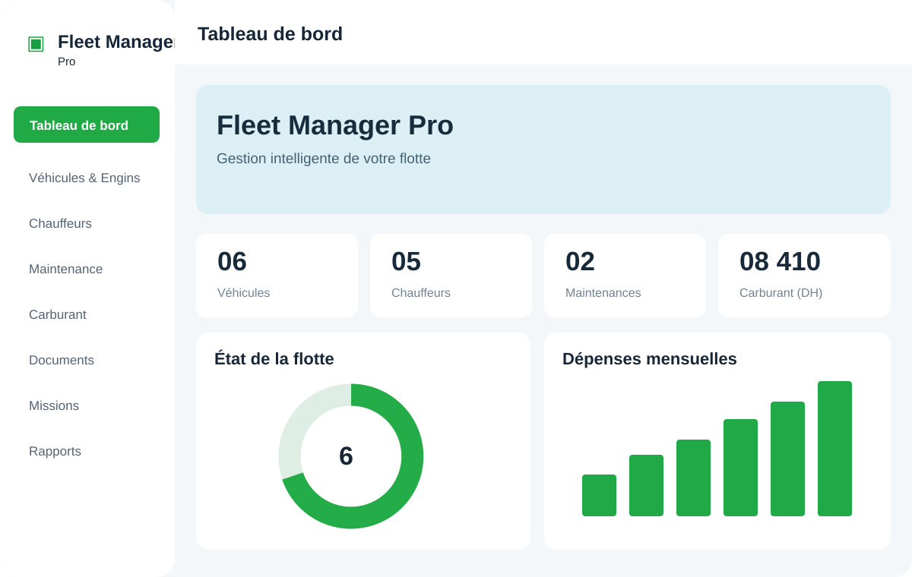
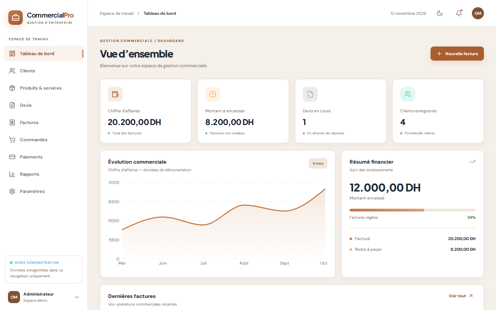

Sites web & plateformes
Développement de sites institutionnels, vitrines et sites WordPress ou Drupal, interfaces responsive et fonctionnalités spécifiques.
WordPressDrupalPHPHTML / CSSJavaScript
Sites web, applications, plateformes institutionnelles et outils métiers adaptés à vos besoins.
Discuter de votre projet ↗Des plateformes institutionnelles aux outils métiers sur mesure : conception, intégration, personnalisation et maintenance.
Développement de sites institutionnels, vitrines et sites WordPress ou Drupal, interfaces responsive et fonctionnalités spécifiques.
Création d’applications de bureau et d’outils internes adaptés aux processus de chaque entreprise : formulaires, bases de données, historiques et rapports.
Amélioration des performances et du SEO, corrections, sécurisation, hébergement, gestion des noms de domaine et suivi technique.
Découvrez 8 projets numériques à la une (6 applications métiers et 2 sites web), ainsi que 5 références institutionnelles et des réalisations freelance. Chaque projet présente un savoir-faire concret, une interface soignée et une approche orientée utilisateur.
Une application de gestion de flotte : véhicules, chauffeurs, maintenance, carburant et alertes.

Site d’agence de voyages : catalogue, filtres, favoris et réservation simulée.
Découvrir le projet APPLICATION
APPLICATIONGestion des articles, mouvements de stock, bons de sortie et inventaires.
Découvrir le projet APPLICATION
APPLICATIONPilotage des chantiers, équipes, stock et finances depuis une interface centralisée.
Découvrir le projet APPLICATION
APPLICATIONPlateforme web dédiée au recrutement et aux candidatures dans le secteur de la santé.
Découvrir le projetGestion des véhicules, chauffeurs, carburant et maintenance préventive.
Découvrir le projet
APPLICATIONSuivi des clients, produits, devis, factures et paiements.
Découvrir le projet APPLICATION
APPLICATIONApplication de gestion optique : clients, produits et opérations métier.
Découvrir le projet INSTITUTIONNEL
INSTITUTIONNEL INSTITUTIONNEL
INSTITUTIONNEL INSTITUTIONNEL
INSTITUTIONNEL INSTITUTIONNEL
INSTITUTIONNEL INSTITUTIONNEL
INSTITUTIONNELIntégration, personnalisation et maintenance de sites web professionnels.
Me contacterLes références institutionnelles présentées correspondent à des projets réalisés dans le cadre de mon activité professionnelle chez TWINS, et non à des contrats individuels directs.
Du site vitrine au logiciel métier, je vous accompagne dans la création d’outils utiles, évolutifs et faciles à utiliser.
Sites vitrines, plateformes WordPress et Drupal, intégration responsive, maintenance et optimisation.
Discuter de ce service ↗Logiciels sur mesure pour les stocks, les mouvements, les documents métier et les tableaux de bord.
Discuter de ce service ↗Formulaires, bons de sortie, inventaires, alertes et rapports pour simplifier les tâches répétitives.
Discuter de ce service ↗Structuration des flux, suivi des réceptions et sorties, traçabilité et outils adaptés aux équipes terrain.
Discuter de ce service ↗